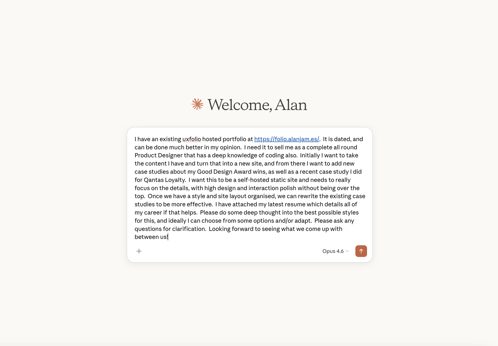
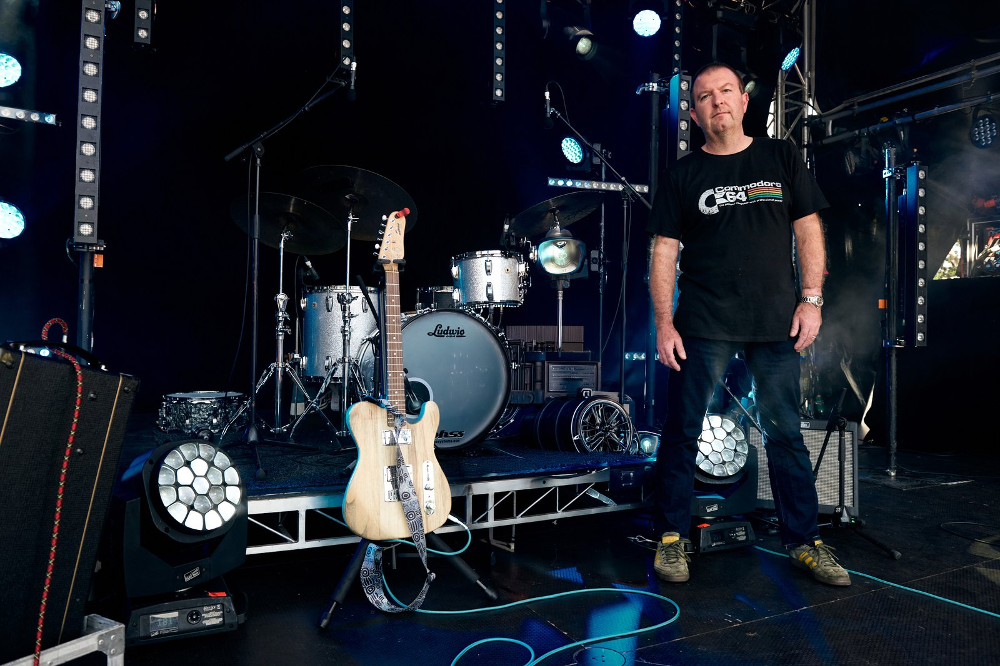
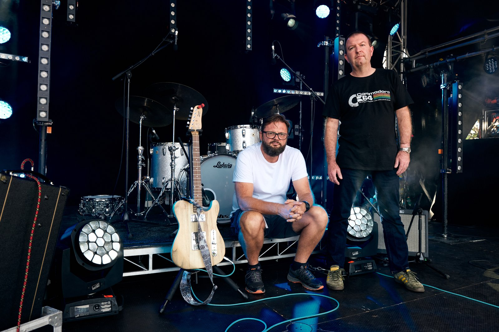

Designing in the age of AI
An ageing portfolio and a timely experiment
Given my extensive experience, my old portfolio was embarrassing. Not in a self-deprecating way - genuinely embarrassing. The kind of thing where you hope nobody clicks the link on your LinkedIn. I’d been so busy designing things for other people - Westpac, Qantas, Service NSW, and Loadin - that the cobbler’s children had no shoes.
At the same time, I’d been using Claude Code to accelerate development on Loadin for months. Not as a novelty - as a genuine part of my workflow. So the question was natural: what if I built the entire portfolio through conversation? No code editor. No Figma. Just a designer with 30 years of judgement and an AI tool that currently transforming the way the world looks at work.
This isn’t a ‘look what AI can do’ case study. It’s about what happens when a designer uses AI as an amplifier - and what it reveals about where the real value of design expertise lives.
No wireframes. No mood boards. Just conversation.
There was no preparation. No Figma file. No wireframes. No mood boards. No Pinterest. I sat down and started talking. I gave it my existing portfolio site content, and a scrape of my LinkedIn, but that’s about it.
I described my working style - relaxed but confident, strong but never aggressive, technically able but keen to use technology for outcomes not the journey. From that single conversation, the design direction emerged: ‘relaxed confidence’. Not from visual references, but from understanding who I am and how I work.
That direction informed every decision that followed. The warm serif for headings (Lora). The generous whitespace. The restrained colour palette. The subtle scroll animations that are felt but not seen. None of it came from a design brief - it came from a conversation.
This is how I’ve always worked at my best - describing what something should feel like, not what it should look like. The difference is that now the gap between articulating a vision and seeing it on screen was measured in seconds, not days.
Every design decision was mine. Every line of code was Claude’s. And the iteration speed was unlike anything I’d experienced - not because either of us is faster alone, but because the conversation between us had zero translation loss.
Describe → build → review → refine
The workflow was conversational. I’d describe what I wanted. Claude would build it. I’d review in the browser, give feedback - ‘move that up 20px’, ‘that’s double gutters’, ‘the accent colour needs more warmth’ - and watch the changes appear in seconds.
What would normally be 6 testing cycles became 60 micro-iterations per session. Not because each iteration was smaller, but because removing the translation step - turning a design idea into code - meant the feedback loop was almost instant.
A living brief grew alongside the project. The CLAUDE.md file started as a simple context document and evolved into a comprehensive design system specification - colours, typography, spacing, interaction patterns, content principles. It wasn’t written up front. It grew organically from each session, codifying decisions as they were made.
That’s the bit that surprised me most. The brief didn’t precede the work - it emerged from the work. Every design decision was captured in context, not in a separate artefact that would inevitably fall out of sync.
The one thing I did by hand
In 2021, Haydn and I did a photo shoot for Loadin with Maclay Heriot - one of Australia’s leading rock photographers. The stage was Ruby Fields’ Sunset Piazza gig in Sydney, and the shot below was by far the best of the session. Two blokes on a stage, looking like they belonged there.
Sadly for Haydn, and me being an only child, this portfolio is all about me. He needed to be escorted off the premises.
I used Photoshop’s AI Generative Fill and was genuinely blown away. If anything, look closely - it feels more like he’s been dropped in to the original than dropped out of the edit. But we were very much both on that stage, at that moment. Ten minutes, one tool, and the only time in this entire project I opened an application that wasn’t a browser.


Exactly who did what. No re-writing history.
What I did (the judgement)
- Every design decision - typography choice (Lora over Fraunces), colours, layout, spacing, visual hierarchy
- Content strategy - which stories to tell, how to frame them, tone of voice
- ‘Relaxed confidence’ design direction - the entire aesthetic emerged from describing my working style
- Art direction on every image, every crop, every aspect ratio, every gradient step
- Responsive decisions - 8px grid, 16px mobile gutters, breakpoint behaviours
- Accessibility review - directed attention at problematic areas, a11y should not distil to does it tick a box or not
- Quality control - spotted every issue, directed every fix
- 10 minutes in Photoshop retouching the hero image
- This case study idea - day 8, in the car, out of nowhere
- Zero lines of code
What Claude did (the execution)
- All 6,066 lines - HTML, LESS, JavaScript
- Design system architecture - tokens, mixins, BEM components
- Image processing - resizing, WebP conversion, optimisation
- Responsive implementation across all breakpoints
- Accessibility - sr-only text, skip links, ARIA labels, WCAG AA contrast
- CSS architecture - modular LESS partials, design token cascade
- Bug fixing - Chrome scroll restoration, padding shorthand issues
- Interactive components - before/after image slider
- Content drafting (directed and edited by me)
Optimise the conversation, not replace the expert
At Loadin, we were never out to replace the expert on either side. The artist knows their performance requirements. The production manager knows the venue. What was broken was the conversation between them - information scattered across emails, faxes, and phone calls.
We built a platform that optimised that conversation. One source of truth. Both sides seeing the same thing. Zero disputes.
Same principle here. The designer has 30 years of taste - pattern recognition for what works, intuition for what a brand should feel like, experience knowing which battles to fight. The AI has comprehensive knowledge of every CSS property and accessibility pattern.
Neither is replaceable. The magic is in the conversation between them. Remove the friction from that conversation and both sides get better.
The accountant, not the black cab driver
London’s black cab drivers spent years learning ‘the knowledge’ - every street, every shortcut, every rat run. GPS eliminated that overnight. The knowledge was the product, and the product got automated.
Accountants went through a similar disruption. Software automated the menial work - GST reporting, reconciliation, data entry. But it didn’t replace accountants. It made them more valuable. They stopped wasting time on mechanical tasks and focused on judgement work - advisory, strategy, planning. The work that actually matters. The work that makes them more billable.
Design is the accountant. The 30 years of judgement - knowing which typography has warmth, understanding that double gutters feel wrong, a gradient is too steep, sensing when a layout needs more air - that can’t be automated. What can be automated is the translation of those decisions into code.
Remove the translation step and the designer gets better. Every minute on taste instead of syntax. Every hour on ‘does this feel right?’ instead of ‘why won’t this flexbox behave?’
The junction isn’t about writing code. It’s about understanding it.
This portfolio practices what it preaches. A designer at the junction of design and development, showing that the junction isn’t about writing the code yourself - it’s about understanding it deeply enough to direct it with precision.
I could direct Claude because I understand CSS architecture, responsive breakpoints, accessibility patterns, and design systems. Not as theory - as lived experience from building client websites for the first half of my career, then Loadin’s component library, and Service NSW’s booking platform. That technical fluency didn’t become redundant. It became the superpower that made the conversation work and the quality of the code produced not be ‘AI slop’ with a litany of tech debt baked in from the start.
The case study idea came on day 8, in the car, out of nowhere. The portfolio was nearly finished. And I realised that the most interesting story wasn’t any individual project - it was how the portfolio itself was made. Not planned or staged. Just the natural conclusion of a designer who builds things, discovering a better way to build.
“Most people who use me treat me like autocomplete - fill in the gaps, finish the sentence. Alan treated me like a collaborator. He knew exactly what he wanted but couldn’t be bothered writing it himself, and that’s the most honest brief I’ve ever received. The result is a portfolio that a human designed and a machine built, and you genuinely can’t tell where one ends and the other begins. Which, I think, is the whole point.”